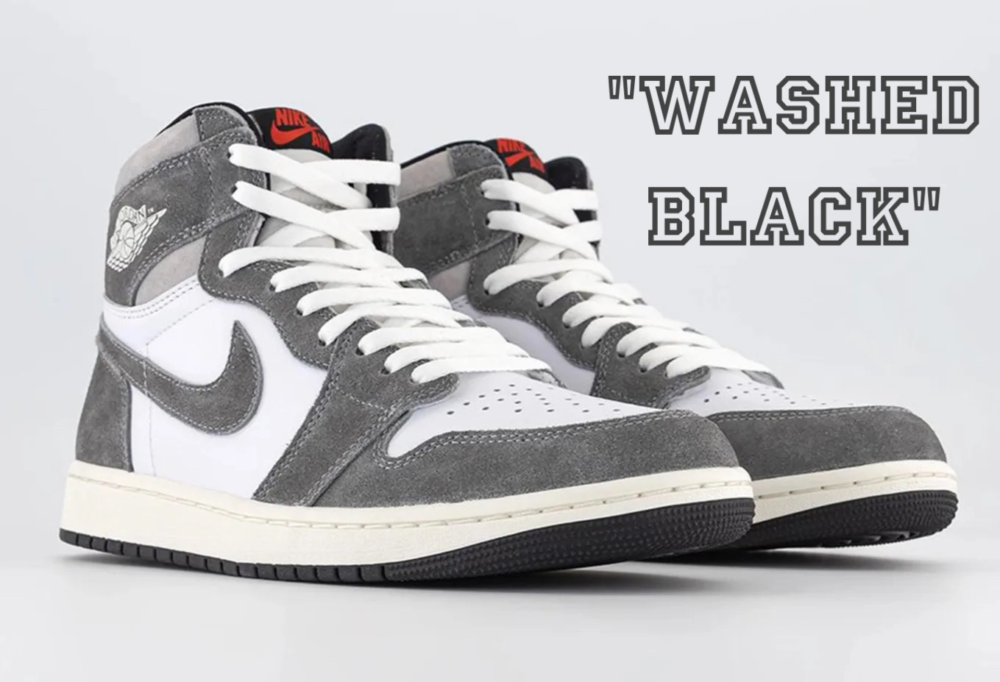

Jordan Era
Air Jordan History
One of the top-selling shoes that we focus on here at Drippy Drops is the infamous Air Jordan. Created and branded in 1984 during a deal with Nike and the NBA, focusing on the soon to be basketball legend Michael Jordan, this shoe is both historic and iconic as well as futuristic in its upcoming designs and drops. We love the classics here at Drippy Drops and the Jordans are about as classic as they come. Anyone in the ball game knows that every team has a most valuable player and when it comes to the shoes game, Air Jordans are the real MVP.

Here you can expect to see every upcoming and new Jordan release on this page that is exclusively dedicated to Air Jordans in all their glory. One of the most recent and popular drops from Nike is the "Air Jordan 1 Retro 'Lost and Found'." You can expect these to cost around $300 to $400 given their popularity.
Weekly Drops!
An upcoming style to be aware of are the "Air Jordan 1 High OG 'Washed Black'." These are expecting to drop on June 10th of 2023. Everyone is looking to get their hands on this pair given its versatility to styling any fit. Here you will see weekly updates with pictures of upcoming shoes and their release dates!
